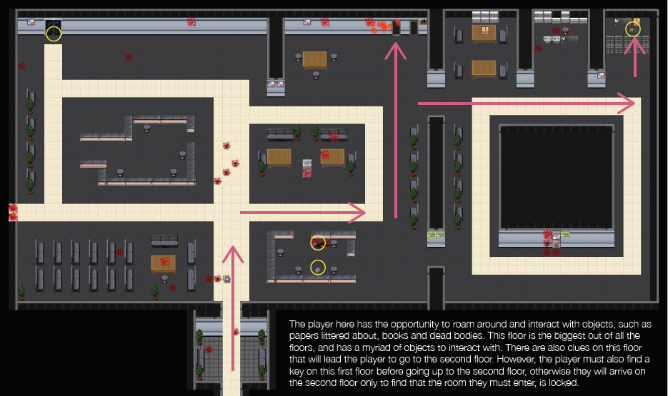
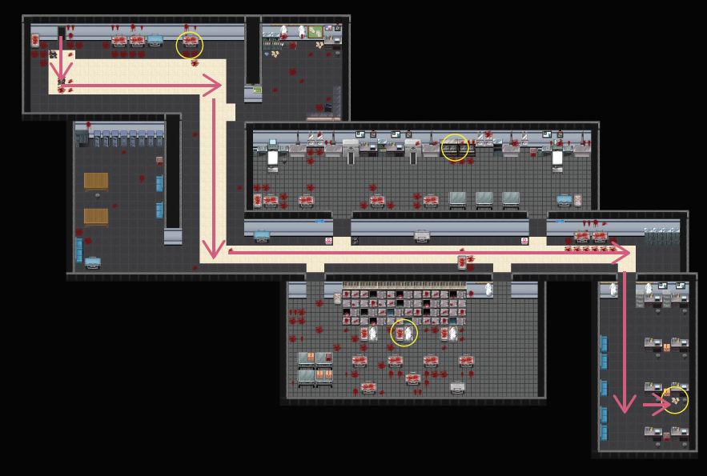
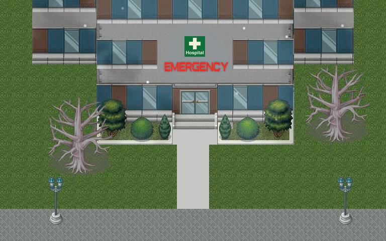

DEAD PATIENT
A 2D HORROR GAME
BRIEF
Development Period: Spring 2018
Role: Level Designer, Programming
Team Members: Kam Neuenfeldt, Tim Chen, Jaspreet Jandu
Tools: Unity Game Engine, Photoshop
TASK
In a game design course, our team was given the objective of creating a game that used a non-linear narrative. The game had to include multiple levels and a gradual rise in difficulty, puzzle solving, and challenge.
RESPONSE
We decided to create a 2D top-down horror game that would have the player face a dilemma of having to find their daughter in an abandoned hospital while also having to find out the mystery behind a zombie apocolypse.
CONCEPT
The overall concept of this player is for them to try to solve the mystery of where their daughter is while also trying to survive a zombie infested hospital. By searching for clues, players can discovery what ultimately happened or learn what the caused the zombie outbreak to start. Players will have to face this while avoiding zombies that lurk around the hospital.

PROCESS
The first thing we focused on was discussed and came up with an idea for a non-linear narrative based on a dilemma that the player would have to choose. We settled on a horror themed exploration game where players would have to try and survive a zombie apocolypse while trying to figure out where the players missing daughter is. We started development by drawing out sketches of our character and creating a storyboard and player task flow to disgn how each level of the hospital would be structured and whhat/where key items would be placed. We then began designing the environment and character sprites that would be used for the game in photoshop. I then took those assets and designed each level based on the storyboards we created. Comments from playtesters were also used to later modify the design of the levels if there were issues found. Afterwards we did bug testing and implemented UI elements to provide clues for players. We then went through another stage of playtsting to see how the balance between exploration, fun and difficulty was. We added final changes to the level design and added sound effects before showing the final version to our class.
MY ROLE
My role on the game was primarily mapping out each floor of the hospital. Using sprite assets that were created in photoshop, I positioned pathways, objects, scenery and interactive objects based on storyboard sketches and user taskflow diagrams we created. Each level was designed so players would need to require at least one item (key, flashlight, or book) to progress further in the game. I also programmed UI elements which helped give clues and hints as to where the player go to progress further. Each level was designed to be fairly linear but hidden objects allowed players to explore different sections of the hospital. I also wrote an NPC pathfinder code for zombies to follow players to add tension to the game.
 CHALLENGES
Due to the game view having a top down camera, collision detection became an challenge due to the player sprite overlaping with wall layer sprites. Another challenge was making sure that the player didnt become easily lost by positioning items and clues in places that didnt stray too far away from players. Balancing this with the size of each hospital floor was difficult because play testers found that either the game became too slow or too easy to progress.
FINAL BUILD & REFLECTION
The final version of the game had a fully designed hospital, with sound effects and items placed around the hospital. Journals and pieces of paper with writing on them provided backdrop to the history of the zombie outbreak as well as clues to the daughters where-abouts. There are a total of 3 levels for the player to explore. Each floor gets significantly more difficult with zombie enemies and dark lighting to make the environment challenging to progress through and scary to navigate through.
Reflecting upon this project, some things we learned in terms of design, story, and narrative, is that everything has to flow together. The characters need to be thought out well, and the story needs to void of all plotholes. Anything that makes the player question the story in terms of narrative and find plotholes, means we are not doing our job correctly. If given the time to improve our game, some things we would do are to add in more branching paths, and possibly add in more items, and even possibly an enemy or two to give the player action. Other than that, we are satisfied with what we have created.
